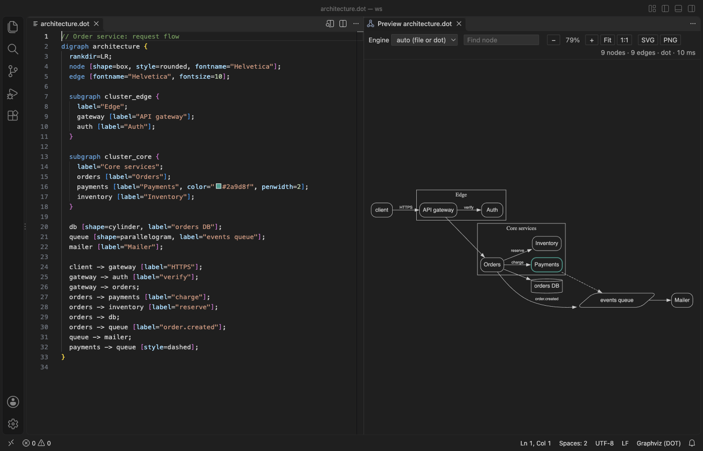

Open files in VS Code and Cursor / Docs and diagrams
Preview a Graphviz DOT graph without installing Graphviz
Graphviz Viewer & DOT Viewer draws a .dot or .gv file beside the editor in VS Code and redraws it as you type. Graphviz 16.1 ships inside the extension as WebAssembly, so you install nothing else, and it works offline and on a locked-down laptop. The preview, the six layout engines, click to jump to a line and SVG or PNG export are free. Zovo Pro (USD 19 once) adds vector PDF export, export of every graph in the workspace and export on save, with 3 free tries each.
Free, MIT license. Extension ID zovo.zovo-graphviz-preview, version 0.2.3. Needs VS Code 1.90.0 or newer.
Also free from Zovo: Mermaid Diagram Editor & Viewer, VS Code Marketplace · Open VSX (Cursor, Windsurf).
This guide is also in Nederlands, Bahasa Indonesia, Čeština, Deutsch, Español, 日本語.

Steps in VS Code
- Install Graphviz Viewer & DOT Viewer from the Marketplace, or press Ctrl+P (Cmd+P on macOS) and run
ext install zovo.zovo-graphviz-preview. - Open a
.dotor.gvfile. Click the preview icon in the editor title bar, or press Ctrl+K V (Cmd+K V on a Mac). The graph opens beside the file. - Edit the file. The preview redraws 300 ms after you stop typing, with no need to save. A syntax error is underlined on its line and listed in Problems, and the preview keeps the last good drawing.
- Pick dot, neato, fdp, sfdp, circo or twopi in the Engine list. With auto, the
layout=attribute of the graph is used, or dot when there is none. - Type in Find node to light up the nodes whose name or label matches. Click a node, an edge or a cluster to put the cursor on its line in the source.
- Click SVG or PNG to save the graph. PNG is saved at 2x on a white background, in the normal Graphviz colors.
Where Zovo Pro saves time
The live preview, all six engines, errors in Problems, Find node, click to line, pan and zoom, SVG and PNG export of the open graph, and dot blocks in the Markdown preview are free. It needs no sign-in, makes no network calls and has no telemetry.
When a design document or a print needs the graph, PDF export saves a vector PDF where text stays text, so it is sharp at any zoom and you can search it. Pick graph-size pages like dot -Tpdf, or A4 or Letter pages with a title page and bookmarks. A Markdown file gives one page per dot block. The other two Pro tools export every graph in the workspace in one run, and keep an SVG, PNG or PDF next to each source up to date when you save.
With Export to PDF (Vector, Title Page) (Zovo Pro)
- Open the preview and click PDF (it has a small PRO tag), or run "Graphviz: Export to PDF (Vector, Title Page) (Pro)" from the Command Palette.
- Pick graph-size pages, or a title page with A4 or Letter pages, then pick where to save.
- Escape, Cancel or a graph error uses no free try.
Export to PDF (Vector, Title Page) works 3 times on your computer before it asks for a license, and a try counts only when you get a result. Opening a file shows no popup and no countdown.
Zovo Pro costs USD 19 once. It is not a subscription, and it turns on the Pro tools in every Zovo extension, not only Graphviz Viewer & DOT Viewer. After a card payment (Stripe) your license key shows on the next page. In VS Code, run "Zovo Pro: Enter Zovo Pro license key" from the Command Palette and paste it. The key is checked on your computer, with no network call. With GitHub Sponsors, pick the "$19 one time" tier, then run "Zovo Pro: I already paid: unlock with GitHub Sponsors" and sign in with the same GitHub account. With PayPal, send USD 19 with "Zovo Pro" in the note and the key comes by email within a day.
A team of 5: USD 59 once, by card or by PayPal. Every rule and every Pro tool is on the Zovo Pro page.
Steps in Cursor, Windsurf or VSCodium
- Open the Extensions view with Ctrl+Shift+X (Cmd+Shift+X on macOS).
- Search for
zovo.zovo-graphviz-previewand click Install. Cursor, Windsurf and VSCodium install from Open VSX, where it is published aszovo/zovo-graphviz-preview. - If your editor has no gallery, download the .vsix from the Open VSX page and run "Extensions: Install from VSIX...".
- Then use it the same way as in VS Code.
What Graphviz Viewer & DOT Viewer handles
- Graphs and digraphs with clusters, subgraphs and HTML labels.
- Fenced
dot,graphvizandgvblocks in Markdown, drawn in the built-in Markdown preview. - Dark themes. Default black lines and text take your theme colors, and colors you set in the graph stay as they are.
- Big graphs, laid out in a separate thread with a time limit. sfdp is usually much faster than dot for thousands of nodes.
What it does not do
- Graphs over 4,096 KB are not laid out, and a layout that takes more than 15 seconds is stopped (
graphvizPreview.maxSourceKB,graphvizPreview.renderTimeoutSeconds). image=attributes and pictures in HTML labels are not drawn, by design.- There is one preview per file, and previews are not restored after a restart. Problems show only while the preview is open.
- The PDF uses the standard PDF fonts, so Chinese or Cyrillic labels show as "?" in the PDF. SVG and PNG show them.
Other options
- Graphviz. The free original. Install it and run dot -Tsvg on a file to draw it from the command line.
- Online Graphviz editors. Websites such as GraphvizOnline draw DOT in the browser. You paste the graph into a web page.
Install counts and Open VSX status were checked on 12 November 2026. Descriptions in quotes are the extensions' own.
Questions
Do I have to install Graphviz?
No. Graphviz 16.1 is inside the extension as WebAssembly. Nothing else is installed on your computer, and it works offline.
Can I save the graph as an image?
Yes. SVG and PNG export of the open graph are free. PDF export is a Zovo Pro tool with 3 free tries.
Does it draw dot blocks in Markdown?
Yes. Fenced blocks with the language dot, graphviz or gv are drawn in the VS Code Markdown preview.
Does it work in Cursor or Windsurf?
Yes. Cursor, Windsurf and VSCodium install extensions from Open VSX. Search for the extension in their Extensions view and install it there.
More about Graphviz Viewer & DOT Viewer
Read the Graphviz Viewer & DOT Viewer page for every feature and setting, or the source code on GitHub.
Related guides
- Mermaid Diagram Editor & Viewer on the VS Code Marketplace (also on Open VSX). Live Mermaid preview beside the code, with PNG and SVG export.
- Preview a reStructuredText (.rst) file in VS Code
- Read an RTF file in VS Code
- Preview Mermaid diagrams in VS Code
- Preview an SVG file in VS Code
Zovo Pro and support
Zovo Pro: USD 19 once, every Zovo viewer. It turns on the Pro tools in this extension and in the other Zovo extensions you use. The free features stay free.
After a card payment your license key shows on the next page. Paste it with the command "Zovo Pro: Enter a key".
You can also support the work with no Pro:
Need your format supported?
Open a format request with a sample file, and I reply there whether it can be done. For USD 299 once, through this GitHub Sponsors tier, I add your file format or a missing feature to this extension, with tests, within 7 days.